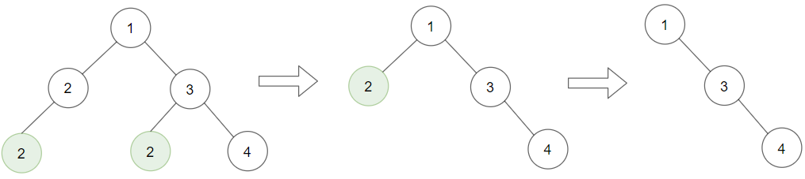
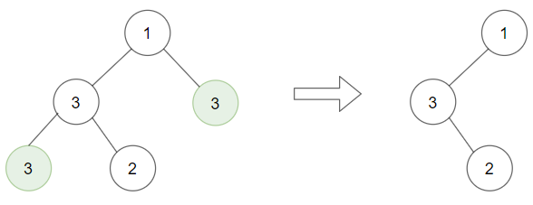
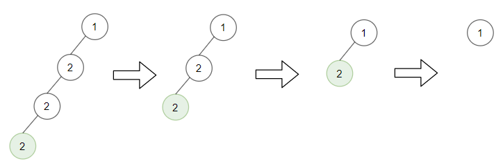

1325. 删除给定值的叶子节点
后序递归：先把左右子树删干净再回头，自己若因此变成值 target 的叶子就连自己一起删。
思路
- 必须后序：只有孩子处理完，才知道自己是不是「新长出来的叶子」。
- 递归返回值直接接回
root.left / root.right，删掉的子树自然置null。 - 判断条件是「孩子全空 且 值等于 target」；根自己被删就返回
null。 - 级联删除由递归回溯自动完成，不需要循环重扫。
图解
最优解
1class Solution {2 public TreeNode removeLeafNodes(TreeNode root, int target) {3 if (root == null) return null;4 // 后序：先把左右子树各自删干净，回来再决定自己去留5 root.left = removeLeafNodes(root.left, target);6 root.right = removeLeafNodes(root.right, target);7 // 孩子都没了且值等于 target：自己成了新叶子，也要删8 if (root.left == null && root.right == null && root.val == target) return null;9 return root;10 }11}题目
给你一棵以 root 为根的二叉树和一个整数 target ，请你删除所有值为 target 的 叶子节点 。
注意，一旦删除值为 target 的叶子节点，它的父节点就可能变成叶子节点；如果新叶子节点的值恰好也是 target ，那么这个节点也应该被删除。
也就是说，你需要重复此过程直到不能继续删除。
示例 1：

输入：root = [1,2,3,2,null,2,4], target = 2 输出：[1,null,3,null,4] 解释： 上面左边的图中，绿色节点为叶子节点，且它们的值与 target 相同（同为 2 ），它们会被删除，得到中间的图。 有一个新的节点变成了叶子节点且它的值与 target 相同，所以将再次进行删除，从而得到最右边的图。
示例 2：

输入：root = [1,3,3,3,2], target = 3 输出：[1,3,null,null,2]
示例 3：

输入：root = [1,2,null,2,null,2], target = 2 输出：[1] 解释：每一步都删除一个绿色的叶子节点（值为 2）。
提示：
- 树中节点数量的范围是
[1, 3000]。 1 <= Node.val, target <= 1000
题面取自力扣当前版本。
数据快照 2026-11-04。题面版权归力扣所有，本站点仅供本人学习使用，请勿对外发布。